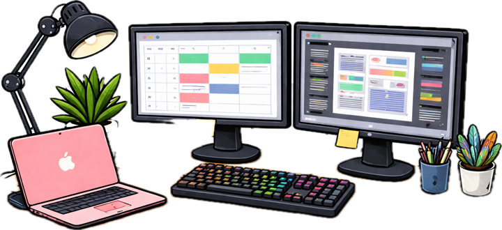
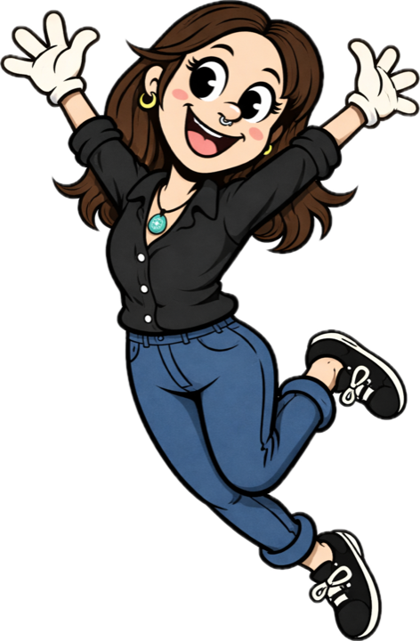

01
The problem
[What wasn't working, for whom, and how you knew. Keep it to the people and the problem, not the solution.]
"[A real quote from a user interview, shared with permission.]"
02
Research

[Which methods you used and why: interviews, usability tests, analytics, competitor review. Say how many people you spoke to.]
Insight 1
[What you learned, in one sentence.]
Insight 2
[What you learned, in one sentence.]
Insight 3
[What you learned, in one sentence.]
03
Sketches to wireframes

[How the ideas took shape. Show the messy early work: it is the most interesting part to other designers and to hiring managers.]
[Photo: notebook sketches]
[Image: low-fidelity wireframes]
04
The design

[The key decisions and why you made them. One decision per screen works well: what changed, and which insight it answers.]
[Before]
[After]
Before
After
05
The outcome

[X%][What the number measures]
[N][What the number measures]
[Result][A qualitative result if you don't have numbers]
06
What I learned
[An honest reflection: what you'd do differently, what surprised you, and what you're taking into the next project.]
people. process. progress. ♡